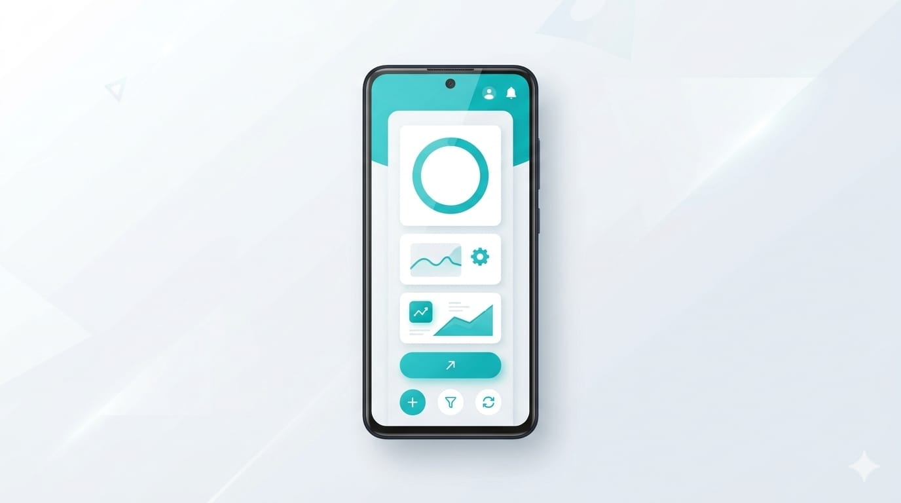
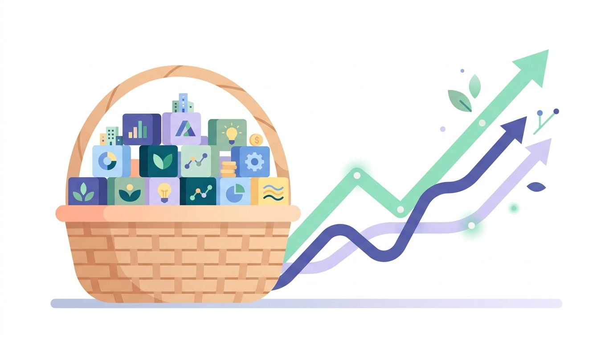
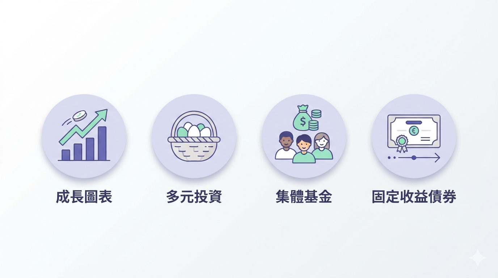
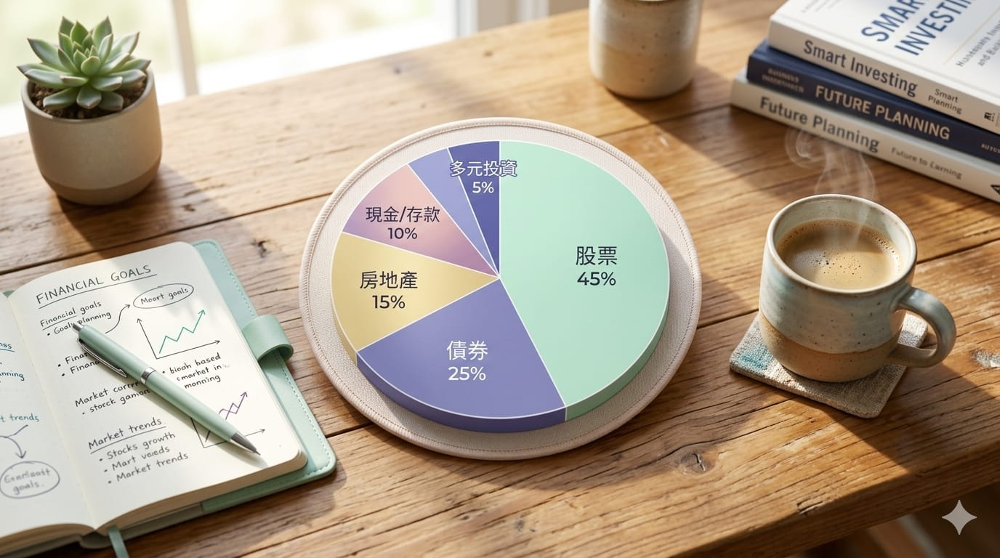
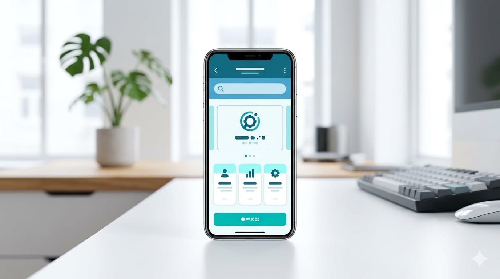

自由廣場散步：中正紀念堂、衛兵交接與周邊順遊
2026-10-08
台北自由廣場怎麼逛？帶你看中正紀念堂的白牆藍瓦、整點衛兵交接、國家兩廳院，順道走訪一旁的景福門、長榮海事博物館與國家圖書館。交通、開放時間、散步動線一次說清楚。

側開秒穿一件式雨衣：下雨天不再手忙腳亂，快速穿脫又時尚
2026-10-08
傳統雨衣難穿、袖子卡卡、還沒穿好就淋濕？這篇聊側開設計的一件式雨衣：從側邊拉開秒套上、快速穿脫，版型俐落不像塑膠袋，通勤騎車、追劇排隊都好用。
iPhone 磁吸支架手機殼實用嗎？360 度旋轉＋防摔一殼搞定
2026-10-06
追劇要找東西墊手機、視訊得一直用手扶？這篇聊 MagSafe 磁吸殼怎麼挑，分享一款 360 度旋轉支架防摔殼：免手扶、角度自由、還兼顧防摔，iPhone 11 到 18 都適用。

【App 開發指南】一套程式碼兩邊跑？Flutter、React Native、KMP 跨平台方案怎麼選
2026-09-27
學原生要學兩套，有沒有『寫一次、iOS 和 Android 都能跑』的方法？這篇比較三大跨平台方案 Flutter、React Native、Kotlin Multiplatform 的特色、優缺點與適合對象，幫你判斷該不該走跨平台，以及怎麼選。

【投資理財修煉·高手篇】AI 投資工具應用：用工具提升分析效率
2026-09-27
資訊爆炸的時代，投資的關鍵不只是知識，還有效率。這篇談 AI 與自動化工具如何幫你整理資料、加速分析，以及我自己開發的股票投資分析系統怎麼把這些整合在一起。

【投資理財修煉·高手篇】全球市場視野：資產不要只放一個籃子
2026-09-27
只投資單一國家市場，等於把身家壓在一個經濟體上。這篇談為什麼要有全球視野、如何用簡單的方式做到跨市場分散，以及全球配置要注意的重點。

【投資理財修煉·高手篇】被動收入策略：讓錢幫你工作
2026-09-27
財務自由的關鍵，是建立能持續產生現金流的資產。這篇談被動收入的觀念、常見的來源，以及怎麼一步步打造屬於你的現金流系統。
【App 開發指南】Android App 怎麼賺錢？內購、訂閱、AdMob 廣告與定價
2026-09-26
App 上架 Google Play 後怎麼變現？這篇整理 Android App 主要賺錢方式——內購、訂閱、AdMob 廣告、付費下載，說明各自機制、Google 抽成、適合情境，並給實際定價與選擇建議。Android 路徑完結篇。
【投資理財修煉·進階篇】籌碼面與財務面：法人動向與財報三表
2026-09-26
進階篇的最後一塊拼圖：籌碼面看誰在買賣、法人動向透露什麼訊息；財務面讀懂財報三表，讓你對一家公司的財務健康有更完整的判斷。

【App 開發指南】完整上架 Google Play：帳號、封閉測試到送審全流程
2026-09-25
Android App 做好了，怎麼放上 Google Play？這篇帶你走完整上架流程：註冊開發者帳號、打包 AAB、在 Play Console 建立 App，並特別說明新手最容易卡關的『12 位測試者、14 天封閉測試』規則。
【投資理財修煉·進階篇】技術面分析：看懂 K 線、均線與常見指標
2026-09-25
技術面分析不看公司好不好，而是讀市場的情緒與趨勢。這篇介紹 K 線、均線、RSI、MACD 等常見工具，幫你建立用圖表輔助判斷買賣時機的基本功。
【App 開發指南】讓 Android App 記住資料、連上網路：DataStore、Room 與 API
2026-09-24
會做畫面之後，這篇讓你的 Android App 真正實用起來：用 DataStore 存小設定、用 Room 存結構化資料、用 Retrofit 串接網路 API，把靜態畫面變成會記憶、會連線的實用工具。
【投資理財修煉·進階篇】基本面分析：怎麼看一家公司值不值得投資
2026-09-24
選股不是靠感覺，而是看懂一家公司的基本面。這篇介紹基本面分析的核心概念：商業模式、獲利能力、成長性與評價，幫你建立判斷一家公司是否值得投資的思考框架。

【App 開發指南】用 Jetpack Compose 做第一個 Android App：畫面、狀態與互動
2026-09-23
學完 Kotlin 基礎，這篇用 Jetpack Compose 動手做出第一個看得到、點得到的 Android App。從 Composable、常用元件、版面排列，到用 remember 與 state 做出會反應的互動，把畫面變活的。
【投資理財修煉·進階篇】槓桿工具：權證與期貨的風險與機會
2026-09-23
權證、期貨聽起來很厲害，但它們是這個系列裡風險最高的工具。這篇不是要你去玩，而是幫你搞懂它們的運作方式、潛在風險，以及什麼樣的人才適合碰。

【App 開發指南】Kotlin 語言基礎：變數、型別、流程控制、函式與 null 安全
2026-09-22
環境裝好後，就從 Kotlin 語言基礎開始動手寫。這篇用實際範例帶你搞懂變數與常數、資料型別、if 與迴圈、函式，以及 Kotlin 的 null 安全機制，打好 Android 開發的地基。學過 Swift 會特別有感。
【投資理財修煉·進階篇】債券入門：為什麼投資組合需要它
2026-09-22
債券常被忽略，但它其實是投資組合裡的穩定器。這篇用白話介紹債券是什麼、怎麼賺錢、有哪些種類，以及為什麼股債搭配能讓你的資產走得更穩、更遠。
【App 開發指南】Android 開發第一步：Android Studio、SDK、模擬器完整準備
2026-09-21
想學 Android App 開發？好消息是任何電腦都能開始。這篇帶你安裝 Android Studio、認識 SDK 與模擬器、準備 Google 帳號，並認識 Kotlin 與 Jetpack Compose，踏出 Android 開發扎實的第一步。

【App 開發指南】iOS App 怎麼賺錢？內購、訂閱、廣告與定價策略
2026-09-20
App 上架後，怎麼把它變成收入？這篇整理 iOS App 主要的變現方式——內購、訂閱、廣告、付費下載，說明各自的機制、抽成、適合的情境，並給實際的定價與選擇建議。

【投資理財修煉·進階篇】ETF 深入：怎麼挑、怎麼配
2026-09-20
ETF 是最適合新手的投資工具，但市面上百百種怎麼選？這篇深入談 ETF 的類型、挑選要看的重點（費用、規模、追蹤指數），以及怎麼用 ETF 建立一個簡單又穩健的投資組合。

【投資理財修煉·進階篇】認識投資工具：股票、ETF、基金、債券全景
2026-09-20
股票、ETF、基金、債券到底差在哪？這篇用白話帶你認識四種最常見的投資工具：各自怎麼運作、風險報酬如何、適合什麼樣的人，幫你在開始投資前先看懂全景。
【App 開發指南】完整上架 App Store：帳號、送審到常見退件全流程
2026-09-19
App 做好了，怎麼放上 App Store？這篇帶你走完整上架流程：加入開發者帳號、在 App Store Connect 建立 App、準備隱私與素材、用 Xcode 上傳送審，並整理最常見的退件原因與避開方法。
【投資理財修煉·入門篇】讀《富爸爸窮爸爸》：改變我金錢觀的一本書
2026-09-19
《富爸爸窮爸爸》是很多人理財路上的啟蒙書。這篇分享我的讀後心得與啟發：資產與負債的真正差別、為什麼要讓錢為你工作，以及它如何改變我看待金錢的方式。
【投資理財修煉·入門篇】投資心態：長期 vs 短期、耐心 vs 貪婪
2026-09-19
投資最難的往往不是技術，而是心態。這篇談長期思維與短線衝動的差別、恐懼與貪婪如何影響決策，以及怎麼建立能讓你走得久的投資心理素質。

【App 開發指南】讓 App 記住資料、連上網路：UserDefaults 與 API 串接
2026-09-18
會做畫面之後，這篇讓你的 App 真正實用起來：用 UserDefaults 儲存小資料、認識 Codable 處理 JSON、用 URLSession 從網路 API 抓資料，把靜態畫面變成會記憶、會連線的實用工具。

【投資理財修煉·入門篇】理財基本概念：資產配置與風險管理
2026-09-18
投資的第一步不是選股，而是搞懂資產配置與風險管理。這篇用最白話的方式，帶你建立投資的地基：錢該怎麼分、風險怎麼控，讓你走得穩又走得遠。

【App 開發指南】用 SwiftUI 做第一個 App：畫面、狀態與互動
2026-09-17
學完 Swift 基礎，這篇帶你用 SwiftUI 動手做出第一個看得到、點得到的 App。從 View、常用元件、版面排列，到用 @State 做出會反應的互動，一步步把畫面變活的。
【投資理財修煉·入門篇】理財第一步：先搞懂錢跑去哪了
2026-09-17
想開始理財卻不知從何下手？別急著投資，先從記帳搞懂自己的收支開始。本文用最白話的方式，帶你踏出理財的第一步。
待辦事項總是做不完？用任務管理把生活理清楚
2026-09-17
腦袋裡塞滿待辦、事情老是漏東漏西？別再靠記憶硬撐。這篇分享一套簡單的任務管理方法，把生活瑣事全部倒出來、分好類、逐一完成，讓你過得更輕鬆。
仙台 3 天 2 夜：銀山溫泉、松島、環市巴士一次玩透
2026-09-17
第一次玩仙台怎麼排？三天兩夜路線一次給你：Day1 走進大正浪漫的銀山溫泉，Day2 遊日本三景松島，Day3 用 Loople 環市巴士輕鬆逛市區。含交通、時間與省錢小撇步。
【App 開發指南】Swift 語言基礎：變數、型別、流程控制、函式與可選型別
2026-09-16
環境裝好後，就從 Swift 語言基礎開始動手寫。這篇用實際範例帶你搞懂變數與常數、資料型別、if 與迴圈、函式，以及 Swift 最有特色的『可選型別』，打好 iOS 開發的地基。

【App 開發指南】iOS 開發第一步：Mac、Xcode、Apple ID 環境完整準備
2026-09-15
想學 iPhone App 開發，第一關就是把開發環境準備好。這篇帶你搞懂為什麼需要 Mac、如何安裝 Xcode、註冊 Apple ID 與開發者帳號，並認識 Swift 與 SwiftUI，讓你踏出扎實的第一步。

【App 開發指南】iPhone 與 Android 開發完整地圖：工具、流程、上架、費用、賺錢一次看懂
2026-09-14
想做 App 卻不知道從何開始？這篇一次講清楚 iOS 與 Android 的開發工具、開發流程、上架商店、實際費用與賺錢方式，並給你一張『該先學哪個平台』的決策建議，當作整個學習系列的入口地圖。